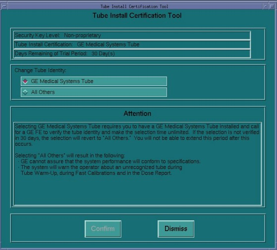
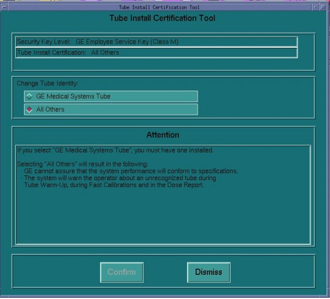

| NOTE: | For GE Medical Systems Tube configuration, the Tube Install Certification Tool displays the number of Days Remaining in the Trial Period. A certified GE Field Service Engineer must confirm the tube identity during the trial period. If the trial period expires before a certified GE Field Service Engineer confirms the tube identity, the system will automatically default to "All Others" functionality. |
Illustration 4: GE Medical Systems Tube Install Certification Screen

Illustration 5: All Others Tube Install Certification Screen
